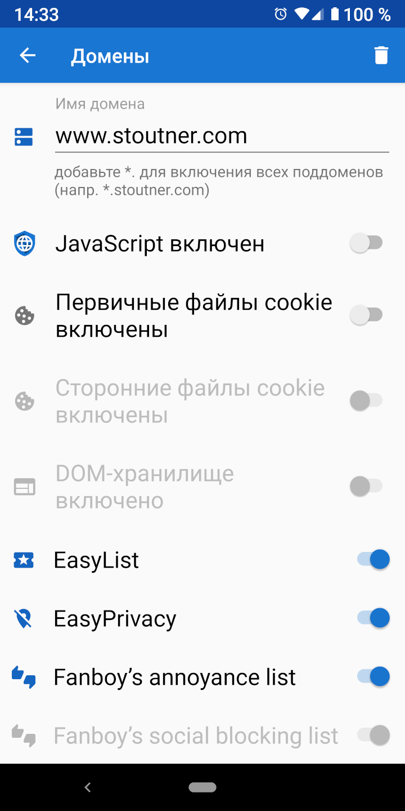

Безопасный веб-просмотр Безопасный веб-просмотр
Безопасный веб-просмотр Безопасный веб-просмотрПо умолчанию в Privacy Browser JavaScript, файлы cookie и хранилище DOM отключены. Тем не менее, некоторые веб-сайты законно нуждаются в этих функциях для правильной работы. При посещении определенного домена в его параметрах может быть автоматически включен определенный набор функций.

При посещении домена с заданными настройками фон текстового поля URL-адреса зеленый.